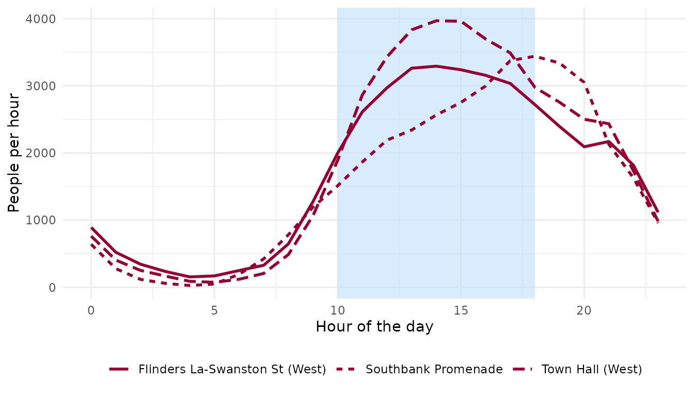
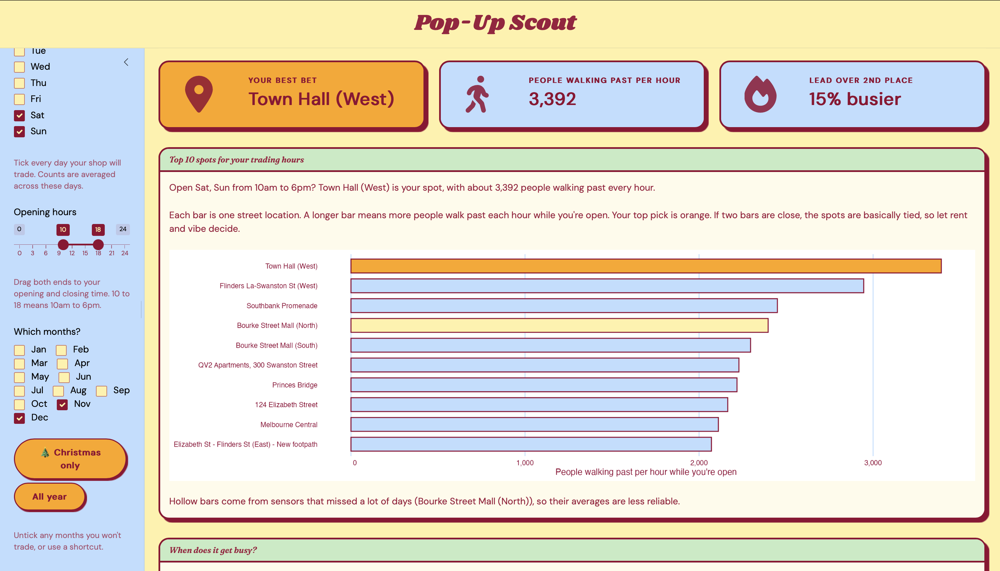
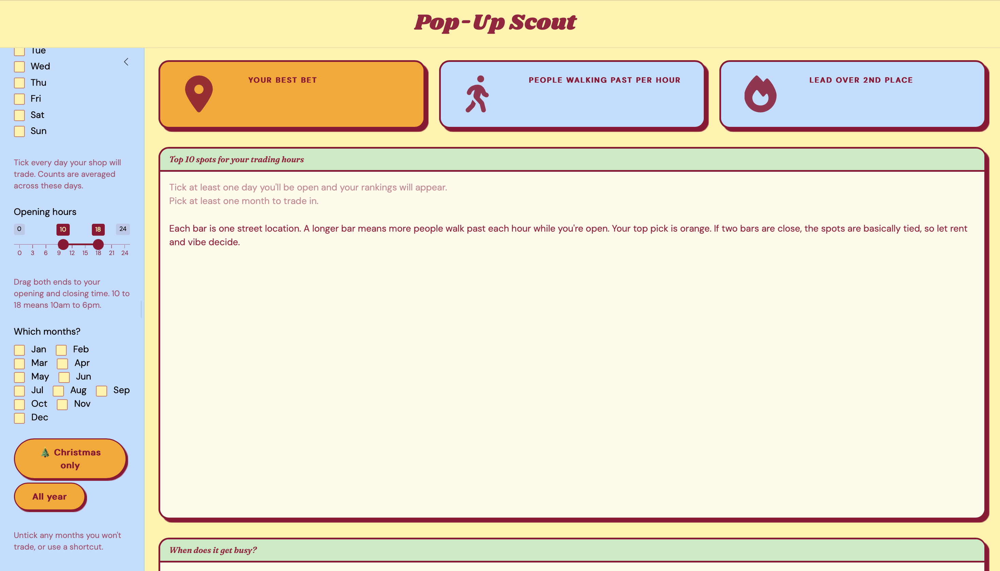

Finding a spot for your pop-up
pop-up-scout.RmdSo you’ve got a rack of clothes, a few weeks and a plan to open a pop-up in Melbourne’s CBD. The big question is where. This guide shows you how to use melbfoot and its app, Pop-Up Scout, to answer it with real foot traffic data.
Install and load
melbfoot lives on GitHub. Install it once with:
# install.packages("remotes")
remotes::install_github("ETC5523-2026/etc5523-assignment-4-anan0016-collab")Then load it whenever you want to use it:
Using the controls
Everything lives in the blue sidebar on the left, and the page updates as soon as you change anything.
- When are you open? Tick every day you’ll trade. Counts are averaged across those days, so ticking Saturday and Sunday gives you a typical weekend.
-
Opening hours. Drag both ends of the slider to your
opening and closing time.
10to18means 10am to 6pm. The hour from 6pm to 7pm isn’t counted, because you’re closed by then. - Which months? Untick any months you won’t trade. The 🎄 Christmas only button jumps straight to November and December, and All year ticks everything again.
Reading the results
The three boxes
- Your best bet is the location with the most people walking past during your trading hours.
- People walking past per hour is how many people pass that spot in an average hour while you’re open.
- Lead over 2nd place tells you how clear the win is. Something like 30% means a genuine standout. Something like 3% means it’s basically a tie, so let rent, foot traffic on the day and vibe decide.
An example: a Christmas pop-up
Say you’re planning a weekend pop-up for November and December. Here’s what the app does behind the scenes, using the same function it calls:
xmas <- rank_locations(
foot_traffic, sensors,
days = c("Sat", "Sun"),
hours = c(10, 18),
months = c("Nov", "Dec")
)
head(xmas[, c("rank", "location_name", "avg_per_hour", "limited_data")], 5)
#> # A tibble: 5 × 4
#> rank location_name avg_per_hour limited_data
#> <int> <chr> <dbl> <lgl>
#> 1 1 Town Hall (West) 3392 FALSE
#> 2 2 Flinders La-Swanston St (West) 2946 FALSE
#> 3 3 Southbank Promenade 2450 FALSE
#> 4 4 Bourke Street Mall (North) 2397 TRUE
#> 5 5 Bourke Street Mall (South) 2296 FALSEThe ranking alone hides something interesting. Here’s the hour-by-hour pattern for the top 3:
library(ggplot2)
hourly_profile(
foot_traffic, sensors,
location_ids = xmas$location_id[1:3],
days = c("Sat", "Sun"),
months = c("Nov", "Dec")
) |>
ggplot(aes(x = hour, y = avg_per_hour, linetype = location_name)) +
annotate("rect", xmin = 10, xmax = 18, ymin = -Inf, ymax = Inf,
fill = "#BEDEFF", alpha = 0.6) +
geom_line(colour = "#930031", linewidth = 1) +
labs(x = "Hour of the day", y = "People per hour", linetype = NULL) +
theme_minimal() +
theme(legend.position = "bottom")
The Swanston Street spots peak in the early afternoon, comfortably inside the 10am to 6pm window. Southbank Promenade is different: its crowds keep building into the evening and peak around closing time. So if you choose Southbank for a Christmas pop-up, staying open a couple of hours later is probably worth it.
Here’s the same pattern in the app:

When something doesn’t add up
Pop-Up Scout tells you what to fix rather than showing a broken chart. If you untick every day, delete every month, or set opening and closing to the same hour, you’ll see a message like this:

It also warns you when even the busiest spot is quiet (try 2am to 5am), and when your top pick comes from a sensor with limited data.
Things to keep in mind
- Sensors count people walking past, not shoppers. A busy footpath is a good start, but it doesn’t guarantee sales.
- Only places with a sensor can be ranked. A spot inside a shopping centre, like near the Melbourne Central clock, can’t be assessed.
- Rent isn’t included. The busiest spot might not be the one you can afford.
- The data covers October 2025 to September 2026. Big one-off events in that year can nudge the averages.
The data comes from the City of Melbourne’s Pedestrian Counting System, licensed under CC BY 4.0.